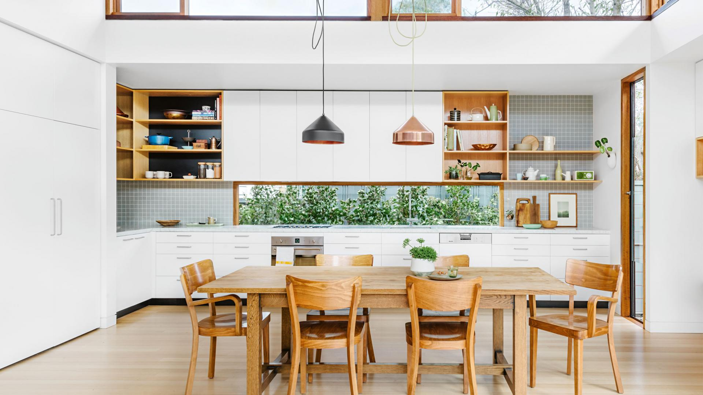

<main>
<aside class="main__side-nav">
  <p class="mat-title">OUR CATEGORIES</p>
</aside>
  <section class="main__upper-content">
    
  </section>
  
</main>

<section class="main__lower-content">
    Lower Content
</section>